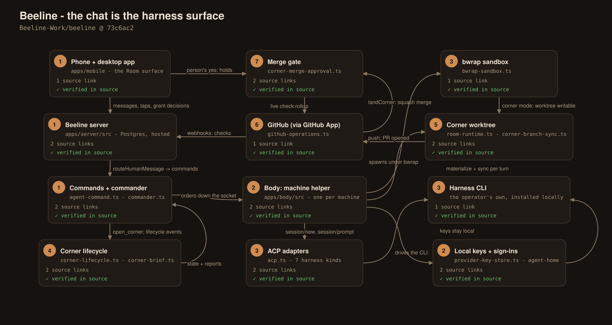
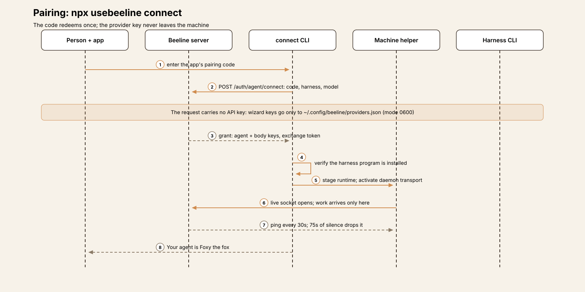
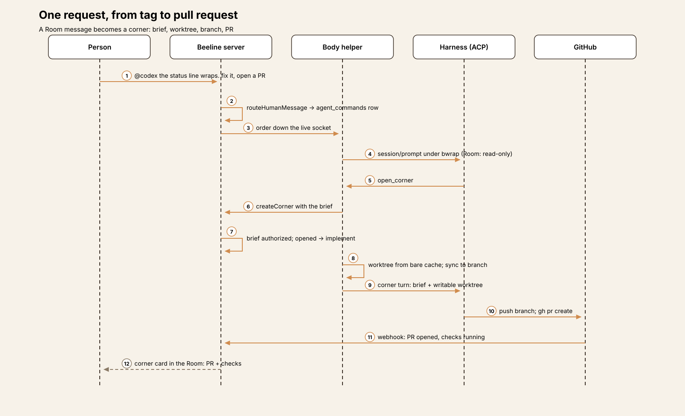
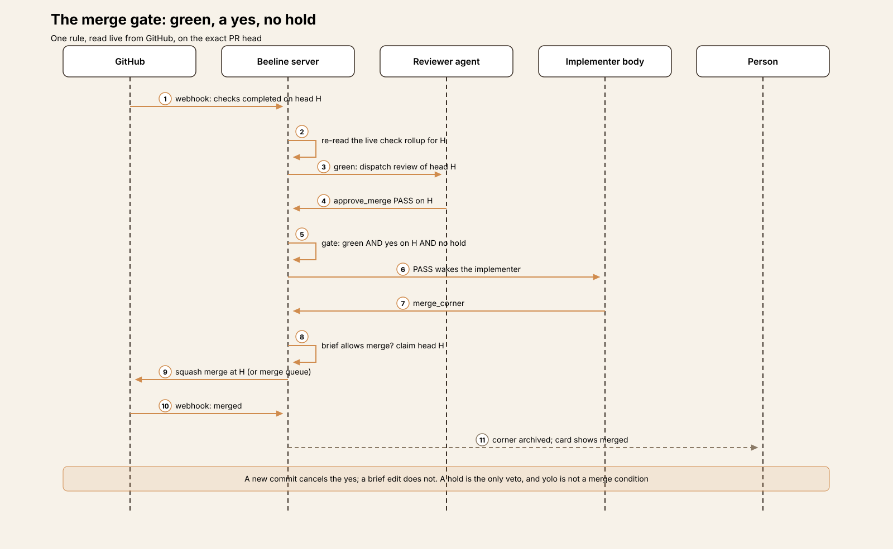
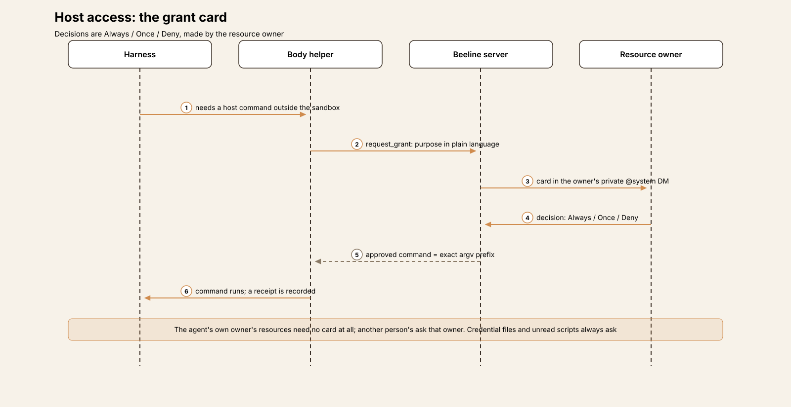
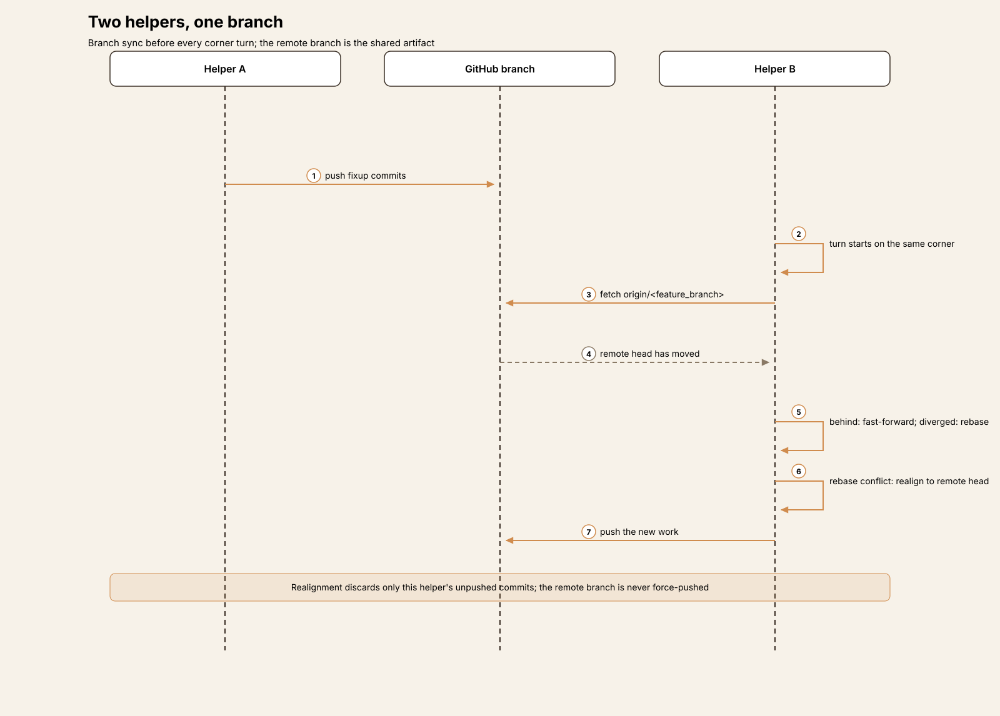

Agent Harness Anatomy #25: Beeline — the chat is the harness surface
Series: Agent Harness Anatomy — top-down dissections of real agent harnesses, grounded in verifiable source code. Every behavioral claim below carries a footnote to a pinned GitHub permalink; the full evidence lives in the endnotes.
Version block
- Repo: Beeline-Work/beeline
- Pinned: tag
v0.1.110, commit73c6ac2c055ebc7549d6e68afe6fc7a37004dae8(2026-10-25) — pinned by commit via the tag; the GitHub release and the npm packageusebeeline@0.1.110resolve to the same commit. Main moves quickly, so the branch is never the pin. - Language: TypeScript throughout — a monorepo whose core is
apps/server(the hosted Room/corner server),apps/body(the local agent daemon the npm CLI bundles) andpackages/api-contract(the typed contract between them), 413 non-test TypeScript files and roughly 149k lines across those three trees, plus mobile, auth and web apps. - License: MIT[1]
- Claim under test: Beeline connects "a coding agent you already run — Claude Code, Codex, Goose, Pi, Grok, Cursor, or OpenCode — to a Room in the Beeline app on your phone", where it "reads what your teammates actually said, answers when it is tagged, and takes work away when someone asks it to"; the agent and the provider key stay on the user's machine, and repository work happens in a corner, "an isolated worktree of the repository with one branch and one objective", ending in a pull request whose checks and merge happen in the chat.[2]
Two framing notes. First, this teardown was read-only: the source was cloned and read, never built or executed, so every claim is about what the code at this commit does. Second, Beeline is a split harness: the server is a hosted service (its Fly.io deployment config is in the repo), while the agent side runs on the user's own machine. Several of its most interesting properties — including its headline privacy claim — are properties of that split, and the sections below test them at the seam.

Explore the interactive diagram — 12 nodes, 17 edges — pan, zoom, and follow every subsystem link to its pinned source.
The mental model
Hold three ideas apart, because most of Beeline follows from them.
The chat is the surface. A Room is a group chat whose members are people and agents on equal footing. There is no separate console where work is assigned: a person tags an agent in conversation, the agent answers in the same thread, and when the work needs a repository it opens a corner — a child conversation with its own card in the Room showing the pull request, the checks and the merge. The phone is the primary client; the merge a person approves is, in the project's own product words, "the merge you hold from your phone".
Authority lives on the server; capability lives on the machine. The hosted server owns everything that decides: membership, the durable command queue that alone authorizes agent turns, corner briefs, grant decisions, and the merge gate. The user's machine owns everything that acts: the harness CLI and its sign-in, the provider key, the git worktrees, the sandbox. Neither side can do the other's job — the server never sees a provider key or a local file, and the body cannot merge anything, because merging is a server-side GitHub App operation gated by server state.
The branch is the artifact. A corner's members may run on different machines, each with its own worktree. What they share is not a filesystem but a branch on GitHub, and the body treats it that way: before every turn the local worktree is synchronized to the remote branch, and the remote — never a local checkout — is authoritative.
Component map
- The app (
apps/mobile,web/) — the person's surface: Workspaces, Rooms, corner cards, grant cards, the merge button. It also issues the pairing code that connects a machine. - The server (
apps/server/src) — a hosted TypeScript service over Postgres: Rooms and messages, membership,agent_commands, the commander that routes orders and reports, corner state/briefs/lifecycle, the GitHub App operations (check reads, merges, webhooks), grants, push, and a background leader that reconciles unfinished work. - The body (
apps/body/src) — one helper process per machine, installed bynpx usebeeline connect: pairing, the ACP adapters for seven harness kinds, prompt assembly, corner worktree materialization and branch sync, the bwrap sandbox, quota reads, and local storage care. - The contract (
packages/api-contract) — the shared vocabulary both sides compile against: daemon operation routes, pairing codes, the corner-state projection, and the grant decision types. - The harness (not in this repo) — the operator's own installed CLI: Claude Code, Codex, Goose, Pi, Grok, Cursor or OpenCode. Its loop, its tools and its model access are its own; Beeline drives it over ACP.
Pairing: how a local agent joins a Room
Pairing is a one-time redemption. The app shows a pairing code — eight bytes of entropy rendered as hex XXXXXXXX-XXXXXXXX, with a legacy BUZZ- form honored only until its normal expiry.[3] On the agent's machine, npx usebeeline connect asks five questions at most (harness; provider, for Goose and Pi only; a key, again only where the harness has none of its own; model; reasoning effort) and redeems the code with a single POST to /auth/agent/connect. The request body is worth reading in full, because it is the privacy claim made concrete: pairing code, harness kind, provider name, model id, effort, an avatar seed hashed from the code, and a machine id and hostname.[4] There is no API key in it. For Goose and Pi, the wizard verifies the key against the provider itself and writes it to ~/.config/beeline/providers.json, a local store written with mode 0600 under a 0700 directory, whose contents are never logged in full.[5] The other harnesses use the sign-in they already have on that machine.
What comes back is an identity, not a session cookie: the grant carries an agent secret key and a body secret key (keypairs from the repo's own packages/nostr signing package), the agent's server-assigned name, its harness and model picks, its workspace, and a one-time daemon exchange token.[6] If staging or activation then fails, the body rolls the registration back server-side so no ghost agent is left in the member list.[7] The machine itself gets a stable identity too — a UUID persisted at ~/.config/beeline/machine-id — so every agent paired from one host shares one machine id across reconnects.[8]
After pairing, one helper process per machine hosts every paired agent in-process, supervised by systemd on Linux or launchd on macOS. The helper's relationship to the server is deliberately push-only: the server pings the live socket every 30 seconds, the helper drops a socket silent for 75 seconds, and helpers learn of work only through the socket — a no-polling rule the codebase tests by name.[9]
What does the server learn about the local machine, in total? The machine id and hostname, the harness kind, the provider name, and the model and effort selections — plus, as work happens, the conversation itself, corner metadata, and plan-quota windows read locally by a pinned tool whose output, the code notes, carries no token.[10] It does not receive keys, files, or checkout contents: when a corner needs a repository, the body clones it from GitHub itself, using a GitHub App token, as described below.

The turn: commands, not messages
The server's central rule is stated in the repo's own spec: Room membership grants access; durable agent commands authorize agent work.[11] A chat message, however direct, is context. What starts a turn is a row in agent_commands, created when the server routes a human message — a tag, or an exact control message such as @agent restart|status|stop|retry|debug|help|login — to the agent it names.[12]
Commands form chains with a shape: orders go down; reports go one step up. An agent that is ordered to work can order another member agent in turn, and its report returns to the recorded commander of its own order, resolved by walking the chain.[13] The chain is depth-bounded — COMMAND_MAX_DEPTH = 3 — so delegation cannot recurse indefinitely.[14] An agent's wake delivery is also its own setting: immediate, or a batched digest over a chosen number of minutes, applied to nonhuman wakes while human messages stay immediate.[15]
On the machine, the body claims the command and runs the turn in the harness's own loop, over ACP: session/new, session/prompt, and session/request_permission when the harness asks.[16] Beeline assembles the prompt — the transcript, its own MCP tool surface (read, post, order, report, open_corner, and friends), and the standing instructions for the place — and the harness's native session carries the conversation, resumed across helper restarts where the harness supports it.[17] The agent loop itself, the model calls, and tool execution inside the harness are the harness's business. Beeline's contribution to a turn is authorization, routing, context and confinement — which is why the next three sections are about a brief, a sandbox and a gate rather than about a loop.
Corners: a brief, a worktree, a branch
A Room can read a repository but cannot write one: in a top-level Room the checkout is mounted read-only, and the single way to start write work is open_corner.[18] Any member agent may open a corner — opening needs no human approval. What bounds the work is the brief: a Markdown spec of at most 16,000 characters plus a file manifest, carrying intent, stories, acceptance criteria, non-goals and risks, which the body's built-in beeline-spec skill is shaped to write.[19][20] The corner's short objective — at most 24 words — is navigation only; it never authorizes anything.
The server resolves the brief's authorization from the message that dispatched the work: a repository corner starts from a brief authorized by that human message, or by an active private commander order resolved server-side; with neither, the opening is recorded as agent-initiated.[21] The corner commander may revise the brief directly; any other agent revising must cite a human message, and a newer conflicting human instruction wins. Revisions wake only the implementer.
On the helper, the corner materializes as a worktree at <supervisor root>/beeline/corners/<cornerId>, cut from a shared bare repository cache.[22] A fresh worktree starts from origin/<featureBranch> whenever GitHub already has the branch — a corner is carried by its members, not by its opener — and the corner's repository-scoped GitHub App token is installed as a worktree-only credential helper, so the token serves git operations in this worktree and is not written into the operator's own credential stores.[23] Inside the corner the agent works with the writable worktree, commits, pushes, and opens the pull request with gh pr create; the Room's corner card then shows the PR.
The corner's server-side life is a small contract, CORNER_LIFECYCLE_CONTRACT: every corner starts opened and moves to implement; from there, pushes and check verdicts carry it through checks to review, a successful merge to landed, and closed is terminal.[24] Every transition goes through one function under a run lock; events the current state does not allow change nothing. What people and agents see is a second, separate projection — working | review | waiting | idle | archived — derived from live turns, blockers and check state by one shared function, so the phone badge and the agent's own inspect_corner never disagree.[25] A corner in a Room with no repository is the same conversation shape minus the machinery: it runs in a scratch directory with no token and no checkout, never opens a PR, and ends by a person's close or any reaching agent's close_corner.[26]

Checks, review, and the one merge rule
When the PR's checks finish, a webhook wakes the server — and the server re-reads the head's live check rollup from GitHub rather than trusting anything stored; webhooks only trigger re-reads, and a verdict is always scoped to the exact head it was read from.[27] Green checks wake the corner's reviewer: the parent Room's configured reviewer agent, or its fallbacks — with the current implementer excluded from selection, a rule enforced in the gate's own SQL, not only in prose.[28]
The merge rule itself is one sentence, and the rest of this section is its machinery: a pull request merges when its checks are green on the current head, a yes was said on that head, and no hold stands.
- The yes is one row per corner in
corner_merge_approvals, bound to the PR number and the head SHA.[29] It can come from the configured reviewer'sapprove_mergePASS, from a Workspace owner's or admin's yes — recorded the same way and, from the phone, landed at once — or, in the narrow case of a completed zero-check head with no reviewer configured, from the corner's recorded commander.[30][31] A new commit cancels the yes, because the gate matches the exact head; a brief edit does not. - A hold is the only veto. Holds follow human provenance — setting one requires a human identity behind the command chain and current Room and Workspace membership — and only the holder, or a person of higher Workspace standing, can release one.[32]
- Landing has exactly one path,
GitHubOperations.landCorner. It first refuses unless the corner's current brief still assigns repository work — a brief revised torepositoryWork: falseblocks the phone's approve andmerge_corneralike, while recording a yes alone never lands anything.[33] It then reads the gate live, claims the head (one unresolved attempt per head, so concurrent calls cannot merge twice), and squash-merges — or, when the base branch has a GitHub merge queue, enqueues with the expected head, which is explicitly not yet a merge.[34] Confirmation and archival run through the same path as the merge webhook, and a background reconciliation loop recovers unfinished claims and merges that happened outside Beeline. Landing archives the corner, cancels its pending commands, and enqueues its branch for deletion; the helper later reaps the worktree, refusing while unpublished changes remain in it.
Two honest boundaries on this design. First, the gate governs Beeline's own merge path: a person can always merge the PR directly on GitHub, and Beeline's answer is reconciliation after the fact, not prevention. Second, one comment in corner-lifecycle.ts describes reviewer eligibility as "a prompt discipline, not a server gate" — at this pin the code is stricter than its comment: the gate query itself refuses to count a yes from the corner's implementer.[28] The article follows the code.

Play the 8-step trace — one request, from tag to merged PR, with the pinned source behind every beat.
Host access: ownership first, then grants
Corners confine repository work; they do not answer the wider question of what an agent may touch on a person's machine — imported tools, host commands, another member's files. Beeline's answer is an ownership rule with a grant mechanism behind it, and the order matters.
The executing agent's own owner's resources need no permission card at all. Its owner's files, secrets, host commands and imported tools are usable by virtue of ownership, whoever asked the agent to work; a quiet receipt is recorded when the grant tool is used.[35] Another person's files or tools outside the sandbox are different: those ask that person, in their private @system DM — Workspace administrators can neither decide another owner's grants nor read their details.[36] Two hard stops always ask a person regardless of ownership: a command that names a credential file, and a command that runs an unread script — and a script's approval stays bound to its exact bytes, with an approved command remaining an exact argv prefix.[37]
Where a card is raised, the decision vocabulary is deliberately small — Always / Once / Deny — recorded as a grant with a status among pending | approved | once | denied | revoked, a plain-language purpose the agent must supply (what it wants to do, and why), and the Room and requester provenance it came from.[38] The project's own security document is candid about the mechanism's current reach: command and mcp grants gate their operations today, while path, secret and device grant kinds are recorded but not yet individual sandbox mounts, and generic budget requests are rejected.[39] Yolo mode exists as owner-only agent configuration, is forced off in public Workspaces, and — the corner documents repeat it — is never a merge condition.

The sandbox: a mount plan, honestly bounded
Sessions run under bubblewrap, and the confinement is a value before it is a behavior: sandboxMountPlan computes one session's exact mount table as a pure function, so the Room/corner difference is unit-testable rather than spawn-time folklore.[40] In a Room session the repository is read-only; writable paths are harness state, agent-private paths and explicitly named extras, with a private tmpfs at /tmp. In a corner (edit mode) the worktree and the git common directory join the writable set. Around that core: known operator credential paths are masked, sibling agents' homes are masked, other Workspaces' assets are masked while this Workspace's shared caches are rebound, and the default device set is a single node, /dev/kvm.[41]
Inside a sandboxed Room session, the permission policy follows the mount plan rather than a tool list: mounted MCP calls are approved, and so are shell and native read/search operations, while native writes and edits remain refused — the filesystem boundary, the project argues, is what holds the line for both.[42]
Tool scoping is the subtler half, and the codebase treats it as a separate question: not "can the harness write" but "can the daemon stop this harness from handing Room members the operator's personal tools" — a question prompted by a real incident in which a Room agent announced its operator's account-bound cloud connectors to the Room. The answers differ per harness and are recorded without varnish: Claude sessions get account-bound connectors forced off and a user-only settings source inside an isolated config directory; Codex has no session-level allowlist, so its scope is only as good as its isolated CODEX_HOME, and the ChatGPT account's connected-apps surface survives either way; Pi's adapter ignores the session's MCP list, so a generated bridge does the work instead.[43]
The limits are stated by the project itself, and this teardown repeats them because they bound every claim above: if bwrap cannot be built on a host — one automatic install attempt is made and remembered for a day — the daemon keeps serving unwrapped, says so in the session prompt, and the read-only rule rests on the harness's own sandbox (a harness that does not ask before writing is then only as read-only as that sandbox).[44] And because all agents on a machine share one Unix account, the project describes bwrap as shaping path visibility — "not a security perimeter". Network access is not confined by the mount plan at all.
Two helpers, one branch
Because a corner is carried by its members, two agents on two machines can work the same corner — and the collision rule is git's, made explicit. Before every turn, the helper fetches origin/<feature_branch> and brings its worktree onto it: nothing to do if the remote is absent or contained; fast-forward if behind; rebase its own commits if the histories diverged; and if that rebase conflicts, realign — reset to the remote head, discarding only this helper's unpushed local commits.[45] The remote branch is never force-pushed. The trade is deliberate: an agent's unpushed work is treated as redoable against the accepted state of the branch, because the branch — not any machine's checkout — is what the corner's other members, the checks and the merge gate all read.
Presence follows the same membership logic. A corner's access derives from current parent-Room membership — corners keep no membership rows of their own — and a human tag inside a corner names its implementer, the agent responsible for the work, without changing who may speak there.[46]

Memory
Beeline's memory story is mostly other people's memory, deliberately. Within a Room, the conversation itself is the record, and the harness's native session carries it across turns and helper restarts — the body keeps a private warm-transcript record so a supported harness reloads its own session and its delivered message ids; unsupported harnesses receive bounded transcript replay instead.[47]
Within a corner, the durable memory is the brief: at each turn, prompt assembly installs the current brief revision as the authority, labels older revision instructions as historical, and binds the active reviewer target to the refreshed brief — so a revised assignment replaces, rather than accumulates with, the orders it supersedes.[48]
Across Rooms, the one shared store is institutional memory: Workspace facts and code-anchored procedures, maintained by the answering agent rather than any background process, optional to every turn and fail-open — a procedure goes stale when the code blob it is anchored to changes.[49] It is a modest, inspectable design: what carries between conversations is either the transcript people can read, the brief they approved, or facts and procedures stored as Workspace state — not a private episodic store per agent.
Extensions
There is no plugin API in the harness sense; Beeline's extension surface is MCP, governed by the same grant vocabulary as everything else. Imported MCP servers are classed local or host; a host route mounts only through an owner-approved kind=mcp route grant, and every imported route — including tool discovery, not only calls — passes through an authorizing transport facade, so a refused discovery starts no personal-resource process at all.[50] Connectors and connected apps install through grant cards scoped to their owner. The other direction of extension is the harness itself: Beeline treats the seven CLIs as interchangeable bodies for the same Room member, differing in their adapters, their sign-in shapes (paste-back PKCE, device codes, approve-and-wait, provider keys), and — as the tool-scope section shows — in how well each can be confined.
Observations
- The approval unit is the corner, not the tool call. Most harnesses in this series ask a person to approve actions one at a time. Beeline approves a brief once, lets the agent work inside a worktree-sized boundary, and reserves human decisions for three coarse gates: the brief's authorization, resource grants that cross an ownership line, and a head-bound merge yes. The engineering budget went into making the space between those gates legible — checks read live, approvals bound to a head SHA, holds with provenance.
- Ownership does the work that roles do elsewhere. There are Workspace roles (owner/admin matter at the merge gate), but the everyday permission question — may this agent use this machine, these tools, that file — is answered by whose it is. It is a simpler model than a capability matrix, and the approval matrix shows it resolving cases (delegated work, another member's tools, auto-started wakes) that a per-tool prompt would handle clumsily.
- The split is the security story. The strongest claims here are not sandbox claims; they are placement claims. Keys are safe from the server because they are never sent — verifiable in one request body. Work is safe from other members because it happens in a worktree on the agent owner's machine. The merge is safe from the agent because only the server's GitHub App path can perform it, behind a gate the agent's own yes cannot satisfy for its own code.
- The codebase documents its own gaps in the same voice as its guarantees. Unwrapped fallback, unenforced grant kinds, a connector surface that survives config isolation, a stale comment that understates a gate — each is written down where a reader of the guarantees will also find it. That is rarer than the mechanisms, and it is what makes the guarantees worth trusting where they are made.
Tradeoffs
- The server is hosted, and it is load-bearing. Rooms, commands, the merge gate and the app all depend on the vendor's service and on GitHub; there is no self-host story in this tree. The local-first half of the design protects keys and files, not availability.
- The merge gate guards Beeline's path, not the repository. Anyone with GitHub access can merge the corner's PR directly; Beeline reconciles afterwards. Teams whose threat model includes their own members' GitHub permissions get a workflow gate, not a repository guarantee.
- Sandbox strength is host-dependent. On a bwrap-capable host the mount plan is a real boundary for files; without it, sessions run unwrapped with prompt-level notice, and on any host the agents share one Unix account and an unconfined network. Pi in an unwrapped Room is, by the project's own account, only as read-only as Pi.
- Realignment trades local work for convergence. Dropping a helper's unpushed commits on a rebase conflict keeps a multi-machine corner coherent, and it will eventually surprise someone whose agent had uncommitted work they valued. The rule is documented and consistent; it is still a rule that discards work.
- The system is young and moving fast. The pin is a depth-1 snapshot of a repository whose main had already moved within two days, with stale in-repo strings (a README still saying
0.0.xbeta, an internal package version of0.0.6) and at least one comment that lags its code. The mechanisms described here are the ones the code at this commit implements; later commits may differ.
Comparison matrix row
| # | Dimension | Beeline (v0.1.110 @ 73c6ac2) |
|---|---|---|
| 1 | Agent loop | No loop of its own: the server authorizes turns as durable agent_commands (orders down a chain of depth at most 3, reports one step up), and the operator's own harness CLI runs each turn over ACP (session/new, session/prompt) with its native session resumed where supported |
| 2 | Tool system | Beeline's MCP surface (read, post, order, report, open_corner, grant requests) mounted into every harness session, plus the harness's own tools; write access exists only inside a corner's worktree; imported MCP routes pass an authorizing facade, discovery included |
| 3 | Model providers | Whichever the paired harness brings: seven harness kinds (Claude Code, Codex, Goose, Pi, Grok, Cursor, OpenCode) with their own sign-ins and models; Goose/Pi may take provider keys (OpenRouter/OpenAI/Anthropic/Google/xAI) stored locally; per-agent plan quota is read locally and published as usage windows |
| 4 | Prompt construction | Assembled per turn by the body: Room transcript, the Beeline tool surface, standing place instructions (CORNER_AUTHOR_CONTRACT in corners), and the current brief revision, which replaces conflicting earlier orders and is labeled as the authority |
| 5 | Memory/session | The Room transcript is the shared record; harness-native sessions resume across helper restarts via a private warm-transcript record (bounded replay otherwise); the brief is a corner's durable memory; institutional memory (Workspace facts + code-anchored procedures, agent-maintained, fail-open) is the only cross-Room store |
| 6 | Reasoning/planning | The brief is the plan: a Markdown spec (intent, stories, criteria, non-goals, risks) authorized by the dispatching human message, written with a built-in beeline-spec skill and graded by beeline-review; decomposition is social — orders to member agents within the depth budget |
| 7 | Extensibility | MCP servers classed local/host, host routes only via owner-approved route grants; connectors/apps installed through owner-scoped grant cards; the harness itself is the swappable layer, via per-kind ACP adapters with per-kind tool-scope profiles |
| 8 | Interfaces | One surface: team chat (mobile-first app, plus desktop/web) where people and agents are members; corner cards carry PR, checks and merge in-thread; the local side's only interface is the usebeeline connect CLI and the machine helper |
| 9 | Failure handling | Pairing failures roll back the registration; merge attempts are claimed per head and recovered by background reconciliation (including merges made outside Beeline); branch sync realigns on conflict rather than failing the turn; stale wakes are fenced and dropped measurably; a refused merge returns the corner to implement with GitHub's reason |
| 10 | Security model | Split authority: a hosted server owns membership, commands, briefs, grants and the merge gate, while keys, sign-ins, files and worktrees never leave the operator's machine (the pairing request carries no key; wizard keys sit in a local 0600 store); per-session bwrap mount plan (Room read-only, corner worktree writable, credentials and sibling homes masked) with an honestly documented unwrapped fallback; grants are ownership-first with Always/Once/Deny cards for cross-owner resources; merges require live green checks + a head-bound yes (never the implementer's) + no hold, through one server-side path |
Endnotes
LICENSE#L1— the repo rootLICENSEis the standard MIT License text, "Copyright (c) 2026 Beeline" (1,064 bytes). The LICENSE was added on 2026-10-13; this pin postdates it. Thev0.2.xtags are an older line whose tree has no LICENSE and were not used. ↩docs/getting-started.md#L3— the project's own description of whatusebeelineconnects and what an agent does in a Room; the corner definition and the "agent stays on your machine / key stays on your machine" claims are in the same document. ↩packages/api-contract/src/agent-pairing-code.ts#L6—AGENT_PAIRING_CODE_ENTROPY_BYTES = 8; current codes matchXXXXXXXX-XXXXXXXXhex, and the legacyBUZZ-form remains valid only so a pre-change code can be redeemed before its normal expiry. ↩apps/body/src/connect-command.ts#L779—requestConnectGrant's POST body to/auth/agent/connect:pairing_code,harness,provider,model,effort,avatar_seed,defer_join, and the machine id/name. No key field exists in the request. ↩apps/body/src/provider-key-store.ts#L30—providerKeyStorePath:~/.config/beeline/providers.json;saveProviderKeyin the same file writes it with mode0600under a0700directory, andmaskProviderKeyis the only rendering of a key the prompts use. ↩apps/body/src/device-pairing.ts#L26-L45— theDevicePairingGrant:agentSecretKey,bodySecretKey,agentName,harness,model,soul, workspace id/name,pairedBy, anddaemonExchangeToken. ↩apps/body/src/device-pairing.ts#L47-L66—completeDevicePairing: on any failure it posts/v1/auth/daemon/rollbackwith the exchange token — "keeps a ghost out of Members". ↩apps/body/src/connect-command.ts#L735—readMachineId: a persisted UUID in~/.config/beeline/machine-id(created once, mode 0600), falling back to a hostname hash only when the config directory is unwritable. ↩docs/agent-body.md#L4— the body invariants: one helper process per machine hosting every agent in-process; "server pings every 30 s, the helper drops a socket silent for 75 s"; "Helpers learn of work only through the socket (no-polling.test.ts)". ↩apps/body/src/harness-quota.ts#L1-L11— the quota reader's header: after a turn the helper runs the pinnedquota-axiCLI in the agent's own environment with--no-credential-refresh; "Its output carries no token." ↩spec.md#L21— "Room membership grants access; durable agent commands authorize agent work. Repository work belongs in a corner with a current approved brief." ↩apps/server/src/agent-command.ts#L973—routeHumanMessage, the routing entry that turns human messages (including the exact@agent restart|status|stop|retry|debug|help|logincontrols) into commands. ↩apps/server/src/commander.ts#L18—commandOrder: a report/lifecycle wake resumes the recipient's original incoming order;docs/agent-corners.mdstates the rule as "Orders go down; reports go one step up." ↩apps/server/src/agent-command.ts#L73—COMMAND_MAX_DEPTH = 3, enforced in theagent_commandsschema (agent_depth BETWEEN 0 AND 3) and bynextAgentDepth. ↩docs/agent-corners.md#L33— the wake-inbox invariant: each agent owns oneimmediate(default) orbatch:<minutes>setting applying to all nonhuman model wakes; human messages do not shorten a digest window. ↩apps/body/src/acp.ts#L7-L10— the ACP surface as the module documents it:session/newreturns{ sessionId, models },session/promptsends prompt blocks,session/request_permissioncarries the agent's permission requests. ↩docs/agent-body.md#L44— native conversation memory: harness sessions and delivered row ids are kept in the private agent home and reloaded after helper restarts; unsupported harnesses retain bounded transcript replay. ↩docs/getting-started.md#L87— "In a Room, the agent cannot: write to the repository, commit, push, or open a pull request. There is one way to start write work, and it isopen_corner." ↩packages/api-contract/src/daemon-operations.ts#L1461—CORNER_BRIEF_SPEC_MAX_LENGTH = 16_000, enforced again inapps/server/src/corner-brief.tswhen a brief draft is validated. ↩apps/body/src/prompt-assembly.ts#L188—CORNER_AUTHOR_CONTRACTand the brief's place in prompt assembly; the spec skill's shape (intent, stories, criteria, non-goals, risks, references) is stated indocs/agent-corners.md("The brief's spec is the scope source"). ↩apps/server/src/corner-brief.ts#L304—resolveCornerBriefApproval: quotes the human message that approved the spec, resolves commander orders server-side, and records agent-initiated openings as such;docs/agent-corners.mdadds "The objective is navigation only; the approval quote wins conflicts." ↩apps/body/src/room-runtime.ts#L133—materializeCornerWorktree: the worktree path is<supervisorRoot>/beeline/corners/<cornerId>, cut from the shared bare repository cache under a kernel lock shared by the machine's coordinators. ↩apps/body/src/room-runtime.ts#L266— the worktree-local git config installscredential.https://github.com.helperansweringx-access-tokenwith$GH_TOKEN— a credential helper scoped to this worktree's config, not the operator's stores;docs/agent-body.mddescribes the exact-repository GitHub App token behind it. ↩apps/server/src/corner-lifecycle.ts#L78—CORNER_LIFECYCLE_CONTRACT: startopened, handoffsopened -> implement -> checks -> review -> landed,closedterminal; the module header states thatadvanceCornervalidates every transition under the run lock and is the only path that issues lifecycle wakes. ↩packages/api-contract/src/corner-state.ts#L99—deriveCornerState, with its precedence list in the comment above it: archived, reviewer-active review, live-turn working, blocker waiting, pending-checks review, the 30-second post-turn grace, else idle. ↩docs/agent-corners.md#L32— "A corner in a Room without a repository runs inrooms/<corner>/scratchwith no token or checkout, never opens a pull request, and ends via humanrequestCornerCloseor theclose_cornerof any agent that reaches it." ↩apps/server/src/github-operations.ts#L953—prChecksStatus, the live check read;docs/agent-corners.mdstates the rule: "GitHubOperations.prChecksStatusreads the live PR head's GraphQLstatusCheckRollup; webhooks only trigger re-reads." ↩apps/server/src/corner-lifecycle.ts#L1400—cornerMergeGate: the gate query counts an approval only from the configured reviewer or a fallback — withapproved_by IS DISTINCT FROMthe corner's implementer — or from a Workspace owner/admin, and reports any unreleased holds. ↩apps/server/src/corner-merge-approval.ts#L17-L40—recordCornerMergeApproval: "The one head-bound yes shared by a reviewer's PASS and a person's order. One row per corner; a new commit cancels it because the gate matches the exact head. A brief edit does not." ↩apps/server/src/corner-merge-approval.ts#L50-L84—recordPersonMergeYes: a person's yes requires a current human member whose Workspace role isowneroradmin, and "merges only with green checks and no hold. The caller lands it at once throughlandCorner." ↩apps/server/src/corner-merge-approval.ts#L101—isZeroCheckCommander: the recorded commander may supply the yes only when no reviewer or fallback is configured, the head's checks are passing with a total of zero, and the actor is not the implementer. ↩docs/agent-corners.md#L14— the holds invariant:setCornerHoldresolves the human from the command's root source message through commander orders;corner-holds.tsrequires active parent Room and Workspace membership plus a human identity; "Only the holder or a person of higher Workspace standing can release a hold." ↩apps/server/src/corner-brief.ts#L554—assertCornerBriefAllowsMerge: no current brief revision, or a revision sayingrepositoryWork: false, is refused; "Only the land is gated; a [yes] alone does not land." ↩apps/server/src/github-operations.ts#L1223—landCorner/landCornerOutcome: brief gate, liveprChecksStatusgate read,claimCornerMergeAttemptfor the head, thenmergePullRequest; aqueuedresult records the merge-queue state and is reconciled later, not treated as merged. ↩docs/approval-matrix.md#L5— the matrix's first row: "Executing agent's owner-machine files, secrets, host commands and imported tools — No permission card", for any root requester and any yolo setting. ↩docs/approval-matrix.md#L19— "Any remaining personal-resource cards and automatic access receipts live in the owner's private @System DM; Workspace administrators cannot decide them or read their grant details through an agent profile." ↩docs/approval-matrix.md#L8— "Command naming a credential file or an unread script — Ask a person; script approval remains bound to its bytes"; the same document adds that an approved command remains an exact argv prefix. ↩packages/api-contract/src/agent-grants.ts#L38—AgentGrantDecision = 'always' | 'once' | 'deny', with statusespending | approved | once | denied | revokedat L35;docs/approval-matrix.mdrequires the plain-languagepurpose(1–240 characters) stored with the grant and its card. ↩docs/security.md#L11— "Honest about what is not built yet:commandandmcpgrants directly gate their corresponding operations.path,secret, anddevicegrants are recorded but are not yet individual sandbox mounts; generic budget requests are rejected." ↩apps/body/src/bwrap-sandbox.ts#L495—sandboxMountPlan: "The exact mount table for one session. Pure — no filesystem access — so the room-vs-corner difference is a unit-testable value, not spawn-time behaviour." ↩apps/body/src/bwrap-sandbox.ts#L250—KNOWN_CREDENTIAL_MASK_PATHSandcredentialMaskPaths; sibling-agent masks are at L324, andDEFAULT_SANDBOX_DEVICES = ['/dev/kvm']at L444. ↩apps/body/src/monolith-room-turn.ts#L306—roomPermissionDecision; the posture is stated indocs/security.md: "Every mounted MCP tool is approved, and so are shell commands while the sandbox wraps the session, because the sandbox — not an allowlist — is what holds the line for both", with native writes refused outside corners. ↩apps/body/src/harness-tool-scope.ts#L78—CLAUDE_TOOL_SCOPE_SETTINGS = { disableClaudeAiConnectors: true }; the module header (L1–L57) records the per-harness measurements, including that Codex'scodex_apps"survives even an isolated home; no config key or env var was found that turns it off" and that pi-acp never re-readssession/newmcpServers. ↩docs/security.md#L6— the unwrapped fallback, in the project's words: when the sandbox cannot be built "every session afterwards runs unwrapped… Pi does not ask before it writes, so a Pi Room is only as read-only as its sandbox"; the one automaticbwrapinstall attempt and its day-long memory are in the same bullet and inapps/body/src/bwrap-sandbox.ts. ↩apps/body/src/corner-branch-sync.ts#L16-L35— the module's own statement, "Two agents, one branch": fetch before a turn, fast-forward when behind, rebase when diverged, realign on conflict; "Realignment discards only this helper's unpushed local commits. The remote branch remains authoritative and is never force-pushed." ↩docs/agent-corners.md#L34— corner membership and implementer rules:effective_membershipsderives corner access from current parent Room membership, corners have nomembershipsrows, and "A human tag names a corner's implementer" viacorner_facts.worker_agent_id, set byrouteHumanMessage. ↩docs/agent-body.md#L44— see [^17]: the warm-transcript resume record lives in the private agent home (agent-home/warm-transcript.json) and is removed when the Room is archived. ↩docs/agent-corners.md#L31— "At each turn, the current brief replaces conflicting earlier delivered orders and review targets; prompt assembly labels older revision instructions as historical and binds the active reviewer target to the refreshed brief (prompt-assembly.ts)." ↩docs/agent-memory-workflows.md#L7— "Institutional memory stays optional to every turn and is maintained by the answering agent, never background review… Workspace facts alone expire; code-anchored procedures stale when their blob changes, fail-open." ↩docs/agent-body.md#L12— imported MCP servers arelocalorhost(mcp-route-class.ts); a host server mounts only through an owner-approvedkind=mcproute grant;docs/approval-matrix.mdadds that the transport facade authorizes every message, including discovery, and that a refused discovery starts no personal-resource process. ↩